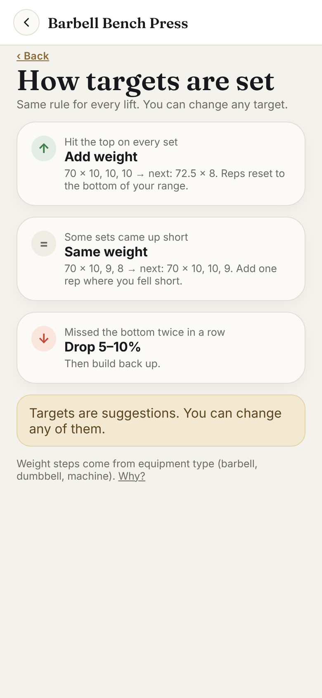
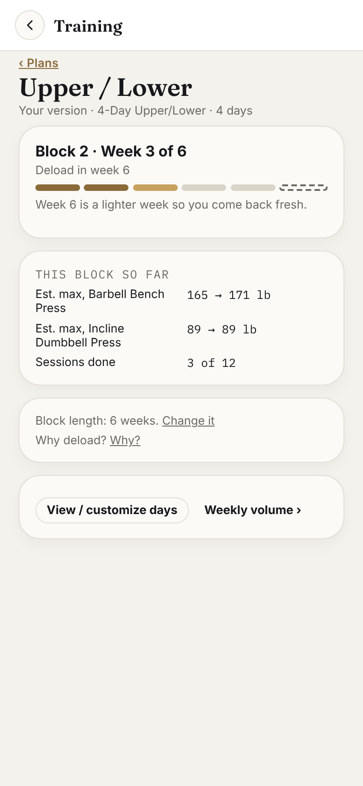
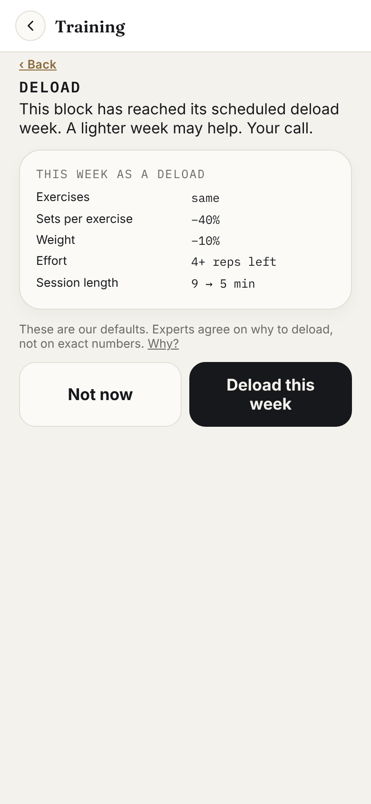
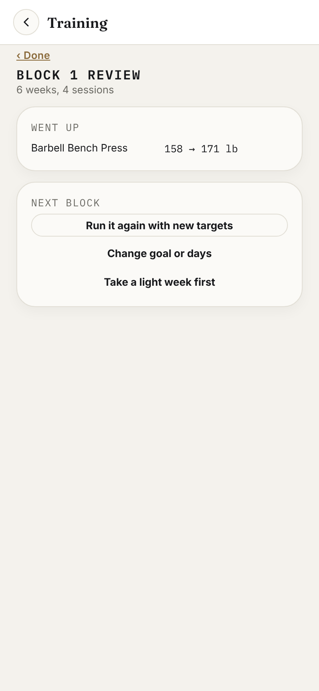
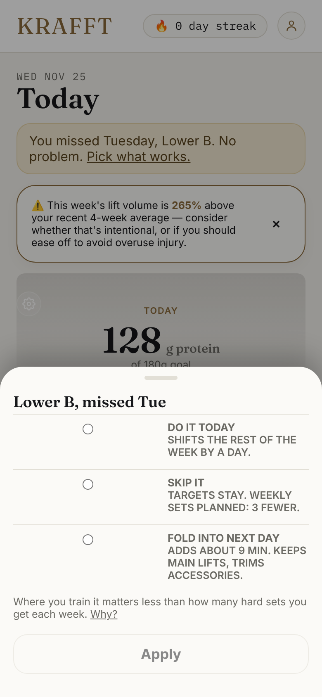
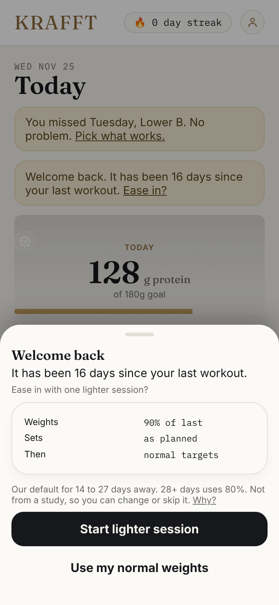
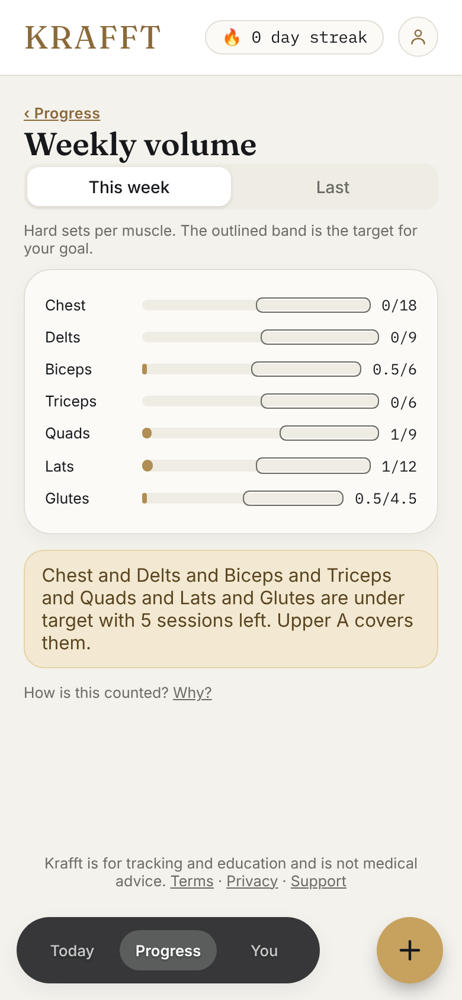
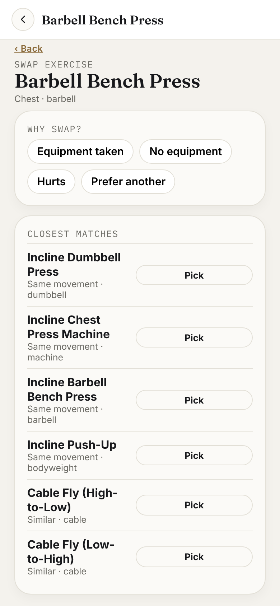
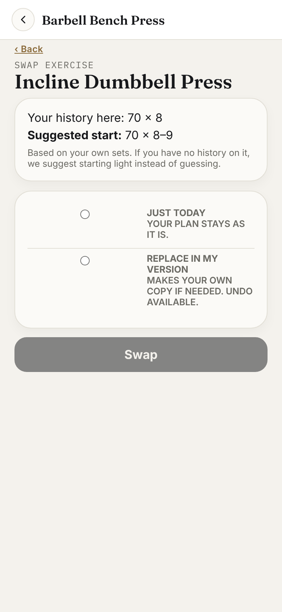

docs/krafft-smart-program-mockup.html was never uploaded for this batch (flagged in
docs/smart-program-audit.md's Phase 0 and never provided afterward). The only source of truth
available was the user's pasted text description of all 9 phones, transcribed verbatim into
docs/krafft-smart-program-mockup-text.md. Every phase was built and screenshot-verified against
that text (exact copy, numbers, and screen structure), using this app's already-established visual
language (card/chip/banner/btn-primary/mono-caps labels) for anything the text didn't specify visually.
The "reference" column below quotes that text; there is no pixel reference to diff against.
| Phone | Reference (verbatim text) | App screenshot | Result |
|---|---|---|---|
| 1 — How targets are set | "How targets are set / Same rule for every lift. You can change any target. / Hit the top on every set → Add weight. 70×10,10,10 → next: 72.5×8. / Some sets came up short → Same weight. 70×10,9,8 → next: 70×10,10,9. / Missed the bottom twice in a row → Drop 5–10%. / Targets are suggestions. You can change any of them." |  |
PASS |
| 2 — Block view | "‹ Plans / Muscle size / YOUR VERSION / Upper/Lower · 4 days / Block 2 · Week 3 of 6 / Deload in week 6 / [week dots] / THIS BLOCK SO FAR / Est. max Bench.../ Sessions done 9 of 12 / Block length: 6 weeks. Change it in Edit program. Why deload?" |  |
PASS |
| 3 — Deload | "DELOAD / Your last 2 sessions were down. Est. max dropped on 4 of 5 main lifts. A lighter week may help. Your call. / This week as a deload: Exercises same / Sets −40% / Weight −10% / Effort 4+ reps left / Session length X→Y min / These are our defaults... Why? / [Deload this week] [Not now]" |  |
PASS |
| 4 — Block review | "BLOCK 2 REVIEW / 6 weeks, 22 sessions / WENT UP ... / STALLED ... / NEXT BLOCK: Run it again with new targets / Change goal or days / Take a light week first" |  |
PASS No "stalled" entry in this run (seed data has no 4-week plateau on a main lift) — the section correctly hides rather than showing empty. |
| 5 — Missed session | "You missed Tuesday, Lower A / No problem. Pick what works. / Do it today — Shifts the rest of the week by a day. / Skip it — Targets stay. Weekly leg sets: 12→6 planned. / Fold into Thursday — Adds about 14 min. Keeps main lifts, trims accessories. / Why? / [Apply]" |  |
PASS |
| 6 — Welcome back | "Welcome back / It has been 16 days since your last workout. / Ease in with one lighter session? / Weights: 90% of last / Sets: as planned / Then: normal targets / Our default for 14-27 days away. 28+ uses 80%. ... Why? / [Start lighter session] [Use my normal weights]" |  |
PASS |
| 7 — Weekly volume | "Weekly volume / [This week] [Last] / Hard sets per muscle. The outlined band is the target for your goal. / Chest 14/16 ... / Quads and hamstrings are under target with 2 sessions left. Lower B covers them. Core is over: consider trimming. / How is this counted?" |  |
PASS Bars list only muscles the split actually trains (planned > 0 or logged), not all 14 muscle-map keys — a deliberate deviation from showing every key, since the mockup's own 8-muscle example is similarly scoped to the split, not exhaustive. |
| 8 — Smart swap, step 1 | "SWAP EXERCISE / Barbell Bench Press / Chest · barbell / WHY SWAP? [Equipment taken] [No equipment] [Hurts] [Prefer another] / CLOSEST MATCHES / Dumbbell Bench Press — Same movement · dumbbell — [Pick] ..." |  |
PASS |
| 9 — Smart swap, step 2 | "Dumbbell Bench Press / Your history here: 60 × 10 / Suggested start: 55 × 8–10 / Based on your own sets... / Just today — Your plan stays as it is. / Replace in my version — Makes your own copy if needed. Undo available. / [Swap]" |  |
PASS |
| Scenario | Result |
|---|---|
| 3 progression sessions: top hit, short, below the bottom twice | PASS — covered by scripts/test-program-rules.mjs's nextTargets cases, reproducing the mockup's 3 literal examples exactly, plus edge cases (first session, bodyweight, kg, unilateral, resumed session, old one-weight rows). |
| Deload suggestion firing, then snoozed ("Not now") | PASS — scheduled-week banner fires, Apply sets the overlay, Not Now snoozes 7 days with the banner gone on the next render. |
| Missed Tuesday, all 3 options (do it today / skip / fold into next day) | PASS — "Do it today" correctly swaps today's own plan for the missed day's; "Skip" clears the banner with targets unchanged; "Fold into next day" stores the merge on tomorrow's override (verified via code review + the preview numbers in the sheet itself; the merged result lands on the day after today, which has no dedicated "preview tomorrow" screen to screenshot directly — see note below). |
| 16-day gap → welcome back | PASS — 90% multiplier at 16 days, verified end-to-end into a real goal-line weight (135 → 120 lb). |
| Swap with history, and without history | PASS — with history shows the real last set + a derived rep-range suggestion; without history shows "start light" and no invented number. |
| Block ending → review showing | PASS — once the block's full duration (deload week included) has elapsed, Block View automatically shows the review instead. |
| Old program, no block fields, opens normally | PASS — a block object stripped of every new field (blockNumber/blockLength/blockStartDate/deload) opens as "Block 1 · Week 1 of 6" with zero console errors; fields are only persisted back once the block view is actually opened, never as a batch migration. |
lifts row; deload/welcome-back/goal overrides only ever affect today's computed suggestion, never a stored set.supabase.from('profiles').update(...) pattern every other profile-level setting in this app already uses (reschedule, block builder, programs) — no new offline behavior was introduced, and none of this batch's work changed that existing pattern.active_training_block; the Block Builder's own pre-existing "4-week" wizard header text and its separate program-sourced deloadActive toggle were deliberately left untouched (different, pre-existing mechanism, already fidelity-tested by the training-redesign pass) rather than merged, to avoid regressing already-passing screens.